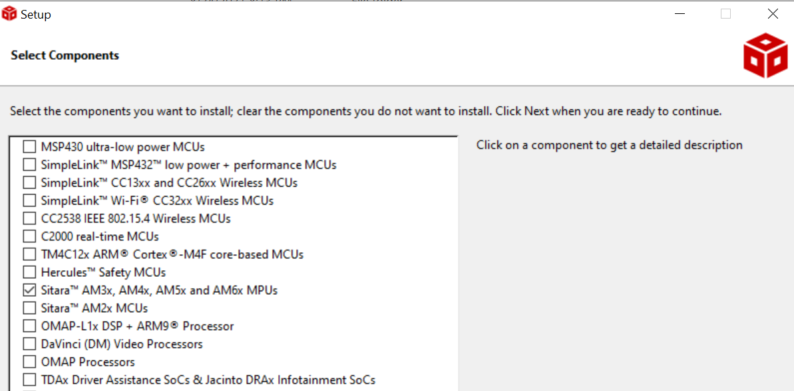
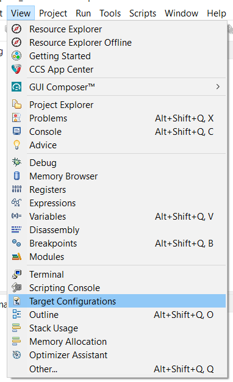
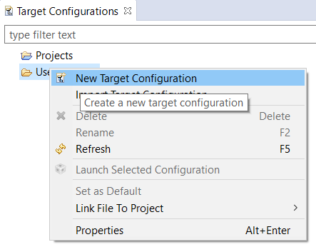
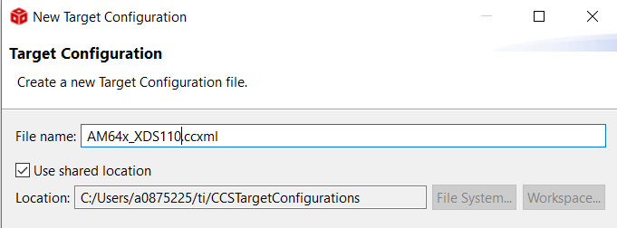
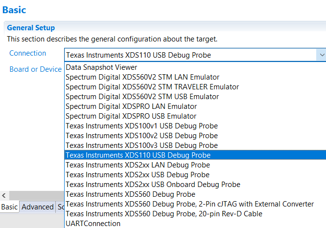
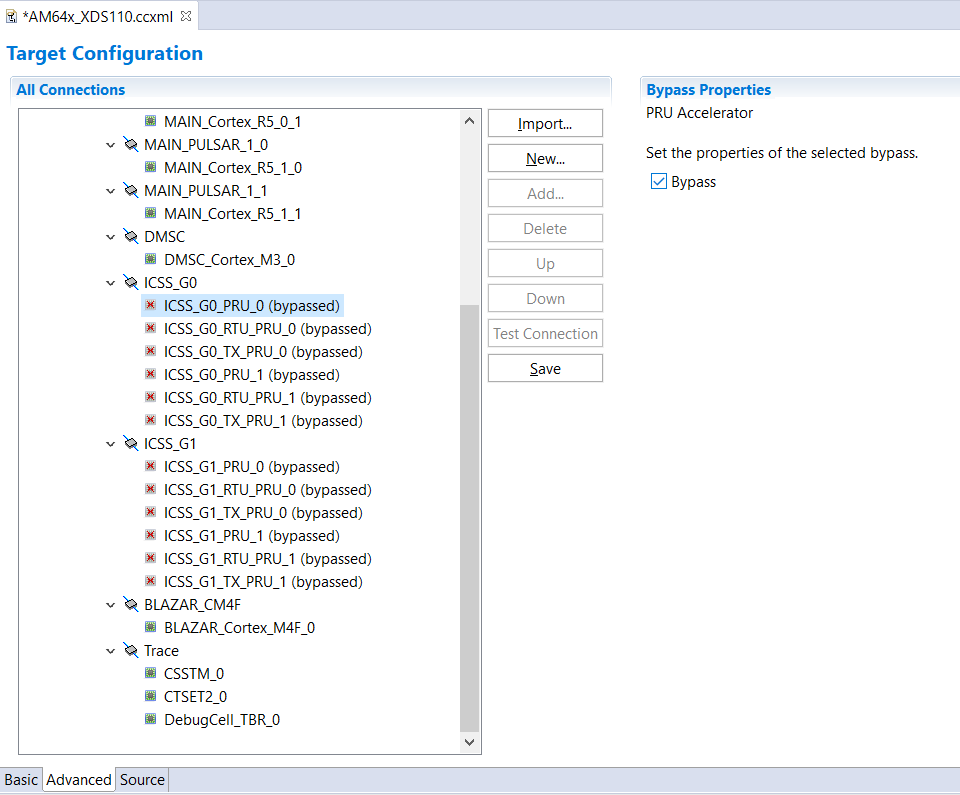

- Note
- The steps on this page need to be done once on a given host machine
Download CCS
Install CCS
- Install CCS 12.7.0 by double clicking the installer file from the downloaded and un-zipped CCS package file.
- Follow the steps and at below screen, recommend to keep install directory as default.
- Follow the steps and at below screen, recommend to keep setup type as "custom"
- Follow the steps and at below screen, select the component as "Sitara AM3x, AM4x, AM5x and AM6x MPUs" to install AM64X related emulation and GELs

CCS Select Components
- Follow the steps, until CCS is installed.
- If using Linux, additionally go through the instructions given at CCS Linux Host Support
- Launch CCS and select the workspace.
Check Packages as seen by CCS
- Launch CCS
- Goto "Window > Preferences"
- Goto "Code Composer Studio > Products", make sure you see SysConfig 1.20.0 listed here.
- Sometimes, you need to click "Restore Defaults" and then "Refresh"
- Goto "Code Composer Studio > Build > Compilers", make sure you see TI CLANG 3.2.2.LTS listed here
- Sometimes, you need to click "Restore Defaults" and then "Refresh"
Create Target Configuration
AM64X-EVM
- Goto "View > Target Configuration"

Target Configuration Menu
- Create a new target configuration

New Target Configuration
- Give a nice name to the new target configuration, typically {soc name}_{JTAG type}

Target Configuration Name
- Select connection as XDS110 USB Debug Probe

Select JTAG Connection
- In "Board or Device" type "AM64X" and select "AM64x_GP_EVM"
- Bypass not used CPUs: Go to "Advanced" tab and enable the "Bypass" option as shown in the below image. typically, ICSS_Gx are not used by most developers, so these can be bypassed. Note, you can always undo this change later, by editing the target configuration, should you need these CPUs.

Bypass unused targets
- Click "Save" to save the newly created target configuration.
- The AM64x target configuration is just barebone, no GELs associated with PSC/PLL/DDR are loaded. AM64x_GP_EVM target configuration loads up and executes the appropriate GELs for the board.
- For SBL, you can use either, but for CCS load, you need to use AM64x_GP_EVM.
- Now you can move on to EVM Setup to prepare your EVM for running programs.
AM64X-SK
- Goto "View > Target Configuration"
Target Configuration Menu
- Create a new target configuration
- Give a nice name to the new target configuration, typically {soc name}_{JTAG type}
Target Configuration Name
- Select connection as XDS110 USB Debug Probe
- In "Board or Device" type "AM64X" and select "AM64x_SK_EVM"
- Bypass not used CPUs: Go to "Advanced" tab and enable the "Bypass" option as shown in the below image. typically, ICSS_Gx are not used by most developers, so these can be bypassed. Note, you can always undo this change later, by editing the target configuration, should you need these CPUs.
- Click "Save" to save the newly created target configuration.
- The AM64x-SK target configuration is just barebone, no GELs associated with PSC/PLL/DDR are loaded. AM64x_SK_EVM target configuration loads up and executes the appropriate GELs for the board.
- For SBL, you can use either, but for CCS load, you need to use AM64x_SK_EVM.
- Now you can move on to EVM Setup to prepare your EVM for running programs.
Known Issues
- To use the debugger correctly with CCS in Linux, some additional steps are required. There is a message which is shown during the CCS installation to do this, but more often than not this is missed. If you miss this, you might get an error similar to
CS_DAP_0: Error initializing emulator: (Error -260 @ 0x0) An attempt to connect to the XDS110 failed. The cause may be one or more of: no XDS110 is connected,
invalid firmware update, invalid XDS110 serial number, or faulty USB cable. The firmware and serial number may be updated using the xdsdfu utility found in the
.../ccs_base/common/uscif/xds110 directory of your installation. View the XDS110SupportReadMe.pdf file there for instructions. (Emulation package 9.4.0.00129)
- There might be EVM specific issues in which the debugger maybe needs to be connected after the power is turned ON, or other similar issues. For this refer the evm specific setup page at EVM Setup
 1.8.20
1.8.20